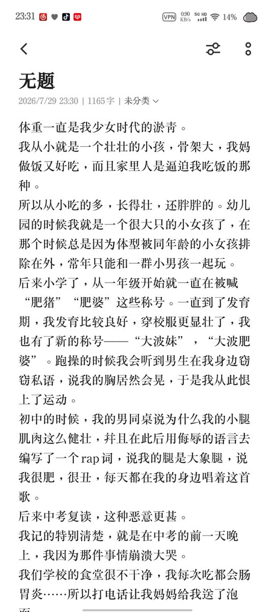
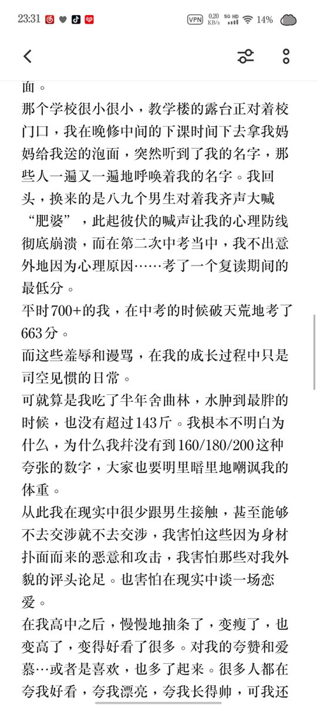
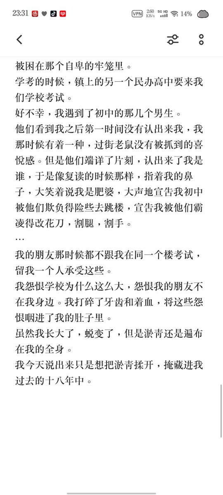

遥
@Miiharukawa
@qi_si72468 所以我们吱吱一直都是一个努力的好孩子呀 成绩又好学习努力外貌优秀的宝宝呀，我每次看到你的照片都会发现一次比一次要更好看有更多进步，总是会感叹你又变好看啦，一直在进步的宝宝无论来时路如何都令人赞叹哦，那些嘲笑你的人反而没看见自己的不足，用他人的缺点来掩盖自己。他们也会仰望现在的你哦



yukomo
@qi_si72468
我想了很久放大号还是小号，最后还是放大号好了 https://t.co/9mXYyNMcGO